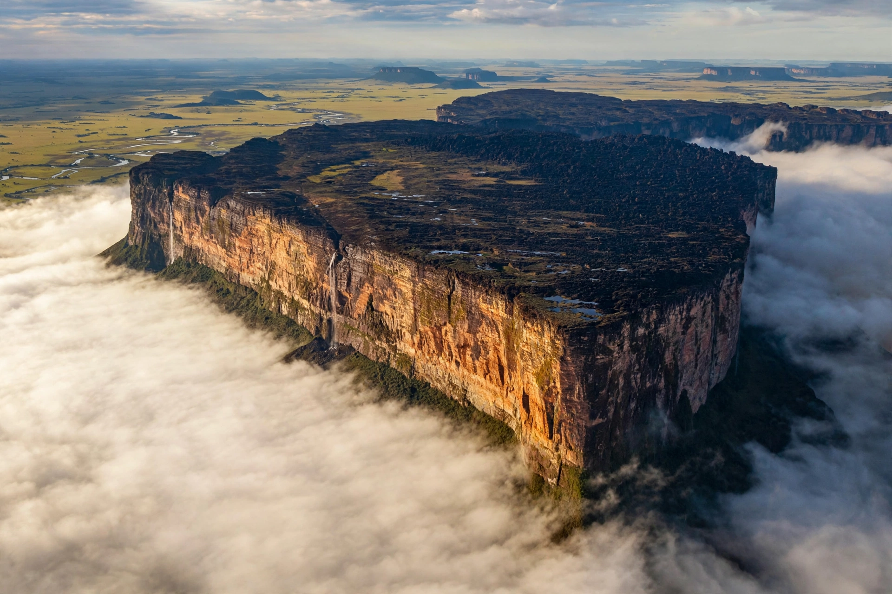

| Elevation | 2,810 m (9,219 ft) |
|---|---|
| Location | Tri-border of Venezuela, Brazil, and Guyana |
| Range | Pacaraima Mountains (Guiana Highlands) |
| Rock type | Proterozoic quartz arenite / sandstone (Roraima Supergroup) |
| Protected areas | Canaima National Park (Venezuela); Monte Roraima National Park (Brazil) |
| First ascent | Everard im Thurn, 1884 |
Mount Roraima (Spanish: Monte Roraima; Portuguese: Monte Roraima) is the highest of the tepui plateaus of the Pacaraima chain in South America, and one of the most famous mountains on the continent. Its sheer-walled, flat summit — about 31 km² in area, ringed by cliffs up to 1,000 m tall — marks the triple border of Venezuela (which holds the great majority of the plateau), Brazil (the state of Roraima), and Guyana. The summit's highest point, Maverick Rock at 2,810 m, lies in Venezuela. For the Indigenous Pemón people the tepui is sacred — a stump of the great tree that once bore all the fruits of the world.
Roraima is a remnant of the Roraima Supergroup, a vast sheet of quartz-rich sandstone laid down about two billion years ago (Paleoproterozoic) atop the Guiana Shield, one of Earth's oldest continental fragments. Uplift and relentless erosion isolated the tepuis as island-like plateaus. The summit is a blackened badland of sculpted rock, quartz-filled "valleys of crystals", and boggy gardens where nutrient-poor soils support highly endemic life.
European explorers reported the mountain from the early 19th century (Robert Schomburgk surveyed the frontier in the 1840s), but its summit was first reached in 1884 by the British botanist Everard im Thurn, who ascended by a forested ledge — still the standard trekking route (La Rampa) from the Venezuelan side. Im Thurn's accounts of the strange summit flora, popularized in lectures, helped inspire Arthur Conan Doyle's 1912 novel The Lost World, in which dinosaurs survive on an isolated plateau — the founding text of the "lost world" genre, although Doyle's fictional plateau is usually identified with Roraima itself.
Millions of years of isolation have made the summit an evolutionary island: a large share of its plants — carnivorous pitcher plants of the genus Heliamphora, sundews, and endemic orchids — occur nowhere else, as does the pebble toad Oreophrynella, which, unable to hop effectively, rolls itself into a ball to escape predators. Streams leaving the plateau plunge off the cliffs in some of the world's tallest waterfalls; water from Roraima feeds tributaries of three great systems — the Orinoco, the Essequibo, and (via the Branco) the Amazon.
Most ascents are six-day treks from Paraitepui in Venezuela's Canaima National Park, with Indigenous Pemón guides mandatory. The Brazilian side, within Monte Roraima National Park, is far less visited. Weather on the summit is notoriously wet, cold, and changeable in every month of the year.